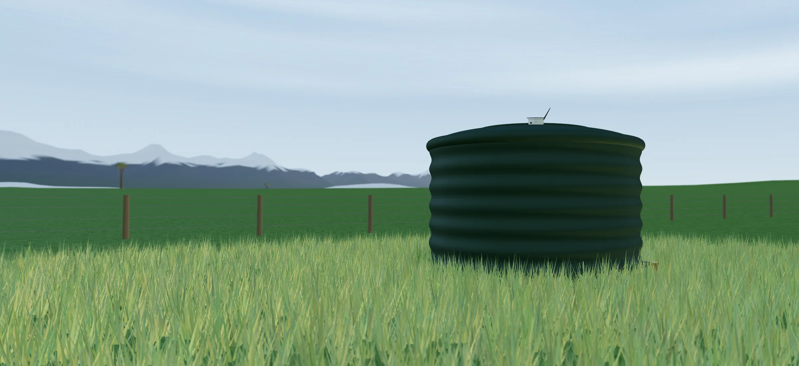
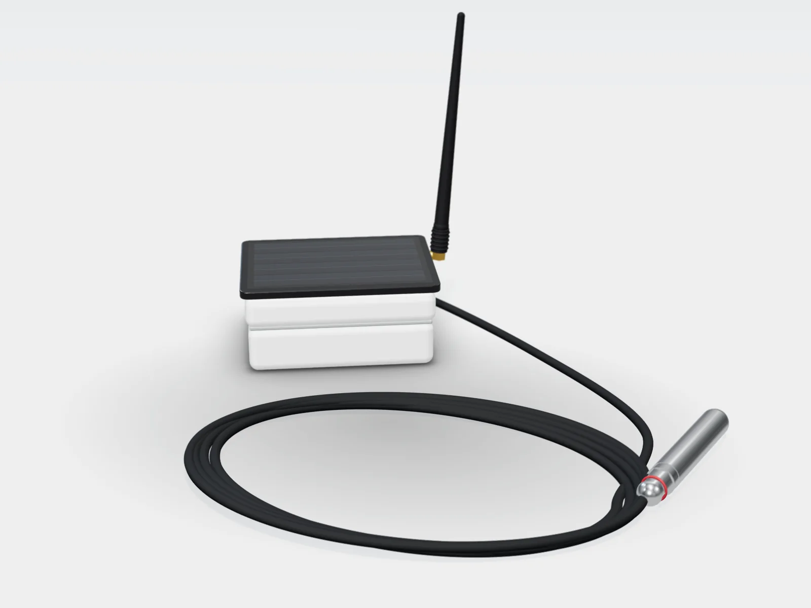

Mechatronics for New Zealand farms
Smart machines for the jobs that never stop.
We design, build and install sensors, controllers and automation for farms, rural properties and organisations. Our tank monitor is built and working, and we're taking sites for the trial now.
5km
LoRa range to the receiver, line of sight
15min
Between readings, faster while the pump runs
1cm
Level resolution from the pressure probe
5m
Maximum tank depth
Design targets for the production unit. We'll publish measured figures as trials finish.
Products
Built for the paddock, not the lab
One system finished and in trials, two more on the drawing board. Built for dairy farms, sheep and beef, lifestyle blocks, and councils, marae, schools and businesses.


Water tank monitoring
A stainless pressure probe on the tank floor measures the water depth. The solar-powered sensor unit sends each reading by LoRa radio to a receiver in the house, which uploads it over Wi-Fi to the Kinetiq app and website.
- Submersible pressure probe that reads the level from the bottom of the tank
- Solar panel and battery, so no power or phone signal is needed at the tank
- Levels, daily use, alerts and pump control on your phone or computer


Made in Aotearoa New Zealand
Designed for Kiwi farms, from Northland to Southland.
Long distances between tanks, patchy mobile coverage, hard frosts and dry summers. We design and test every Kinetiq system for New Zealand conditions, and support it from here.
- Designed and built in NZ
- Works without mobile coverage
- Local support and spares
Services
From an idea on a napkin to a machine on site

Custom machine design
One-off machines and mechanisms designed around the job, from concept sketches to CAD and a working build.

Electronics & PCB design
Sensor boards, controllers and long-range wireless telemetry, designed and tested in-house.

PLC programming
Programming, commissioning and fault-finding for PLC-controlled plant, new or existing.
Automation & control
Pumps, valves, motors and sensors tied together so the process runs itself, with alarms when it needs you.
Installation & maintenance
We fit what we build, commission it on site and stay on call for servicing, spares and updates.
How we work
Four steps from problem to installed system
See the problem
We visit, look at the site and work out what's going wrong and what it costs you.
Design & prototype
Mechanics, electronics and software, designed together and proven on the bench.
Install & trial
We fit it and run it alongside your current routine until it earns its place.
Support it
Firmware updates, spare parts and a real person to call when you need one.
Projects
What we've built

Tank monitoring & pump control
Rural properties often find out a tank is empty when the taps stop. We built a probe, sensor unit and receiver that report each tank's level, daily use and days remaining, and can run the pump that fills it.
- Sensing
- Submersible pressure probe
- Power
- Solar + battery
- Link
- LoRa → receiver → Wi-Fi → cloud
- Control
- Fill pump: manual, auto, schedule
Got a job worth automating?
Tell us what's eating your time. We'll tell you honestly whether a machine can do it.
Contact
Join the trial, or tell us about a problem
We're taking farms, rural properties and organisations around New Zealand for the tank monitor trial. For anything else, describe the job you'd like automated and we'll reply with whether we can help and a rough price.